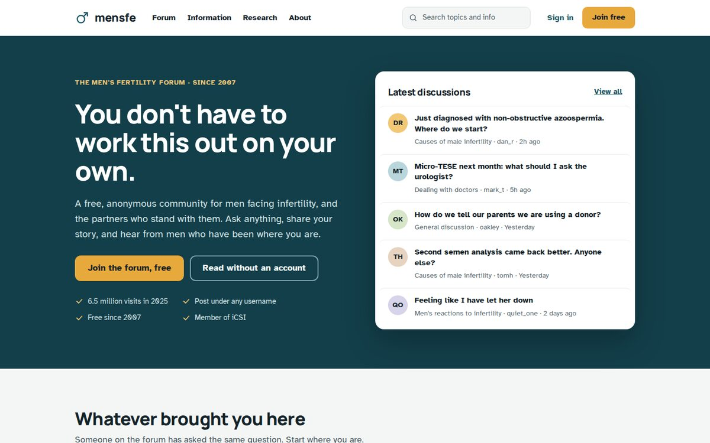
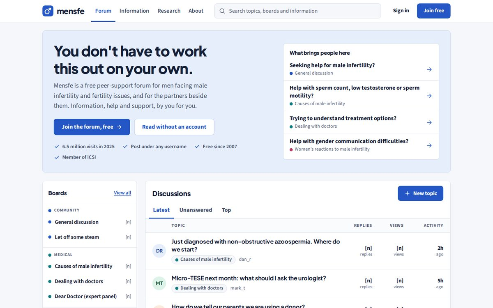
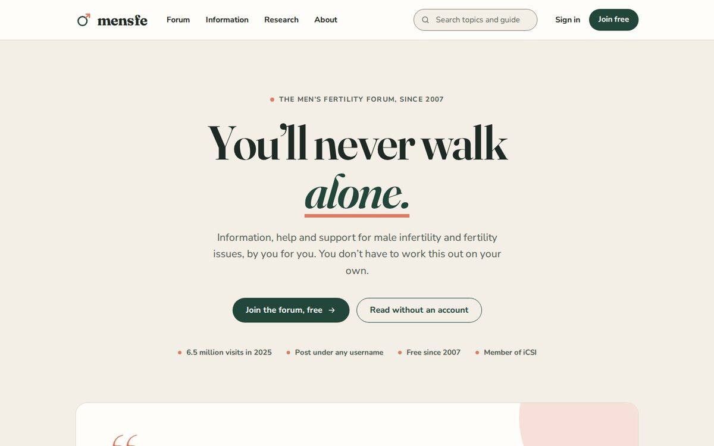
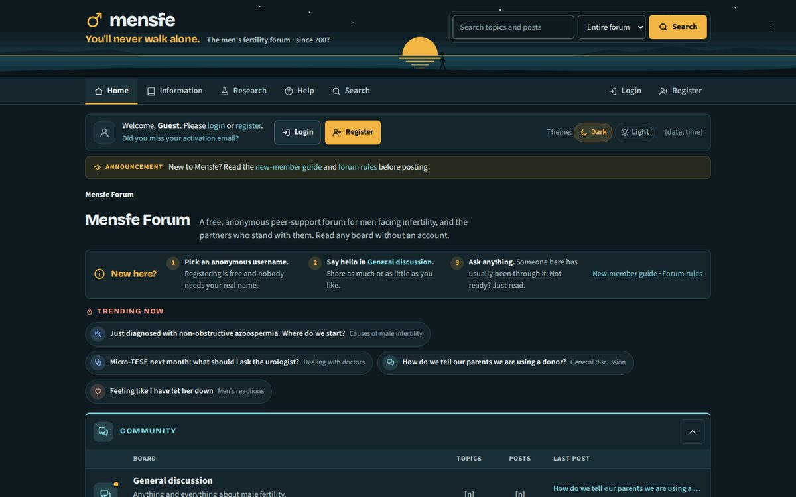
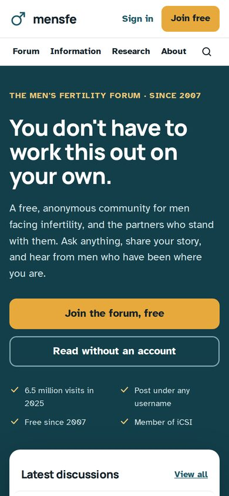
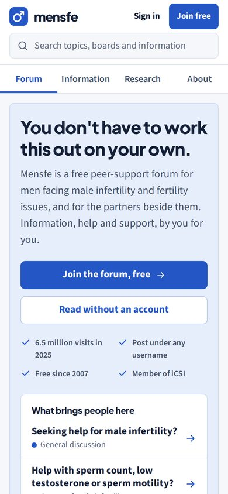
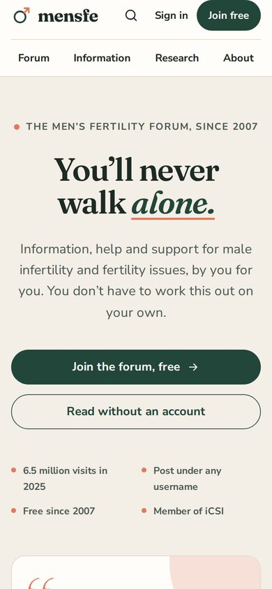
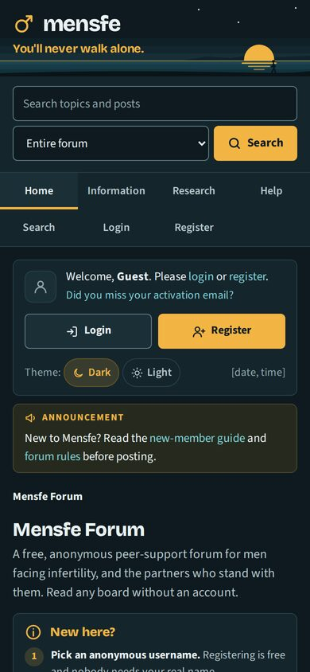

Mensfe forum redesign · Concepts for review · October 2026
Each direction redesigns the same forum around the same content: a forum-first homepage, the board index, a topic page and a medical information page, all mobile-ready and built to fix the issues in the SEO audit. Directions A–C present the forum through a modern website front; Direction D keeps the look and feel of a true message board. Please pick one direction (or the parts you like from each) and we will develop it into the full site and SMF theme.




All three share the same fixes: one clear heading per page, real text instead of text in images, latest discussions on the homepage, the founders' credentials on show, reviewer and date on medical pages, accessible contrast, and layouts that work on phones. Member counts appear as [n] placeholders, and sample posts are illustrative.
Direction A

Direction B

Direction C

Direction D

Side by side
| A · Harbour | B · Clear | C · Stories | D · Forum | |
|---|---|---|---|---|
| First impression | Confident, branded | Professional, efficient | Warm, empathetic | Distinctive, community-first |
| Forum emphasis | Latest-discussions card in the hero; board grid | Live topic feed is the homepage | Featured member stories, then boards | The whole site is the forum; board index is home |
| Medical credibility | Good | Strongest | Good, more personal | Good (information section inside the forum) |
| Emotional warmth | Medium | Lower | Highest | Medium–high (members' voices up front) |
| Effort to theme SMF | Medium | Low | Medium–high | Lowest |
| Accessibility | Very high (hyperlegible body font) | High | High | High (contrast checked for dark mode) |
What happens next: once a direction is chosen, we design the remaining pages (sign-up, profile, search, private messages and the 12 information guides), build the responsive SMF theme, and implement the SEO and AI visibility fixes from the audits during the same build.